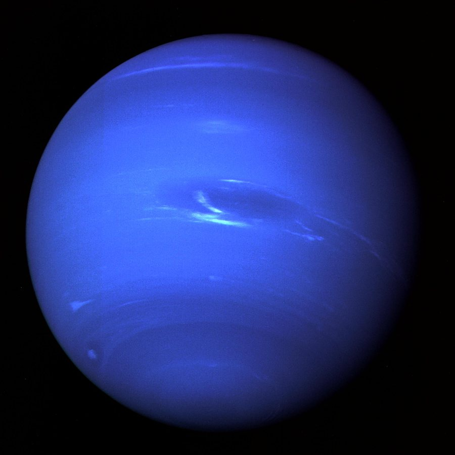

Netuno é o oitavo e mais distante planeta do Sistema Solar. É um gigante de gelo escuro, frio e muito ventoso, com uma intensa cor azul causada pelo metano em sua atmosfera. Não pode ser visto a olho nu da Terra.
Cerca de -200 °C
49.244 km de diâmetro (quase 4 vezes o da Terra)
Entre 4,3 bilhões e 4,7 bilhões de km